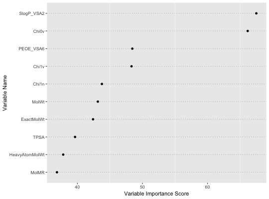
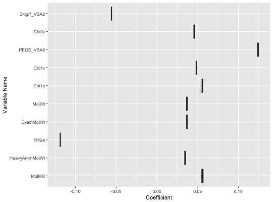

Measuring feature importance with ensemble sparse partial least squares.
enspls.fs(x, y, maxcomp = 5L, cvfolds = 5L, alpha = seq(0.2, 0.8, 0.2), reptimes = 500L, method = c("mc", "boot"), ratio = 0.8, parallel = 1L)
5 by default.5.seq(0.2, 0.8, 0.2)."mc" (Monte-Carlo resampling)
or "boot" (bootstrapping). Default is "mc".method = "mc".1 (not parallelized).A list containing two components:
variable.importance - a vector of variable importance
coefficient.matrix - original coefficient matrix
See enspls.od for outlier detection with
ensemble sparse partial least squares regressions.
See enspls.fit for fitting ensemble sparse
partial least squares regression models.
data("logd1k") x = logd1k$x y = logd1k$y set.seed(42) fs = enspls.fs(x, y, reptimes = 5, maxcomp = 2) print(fs, nvar = 10)#> Variable Importance by Ensemble Sparse Partial Least Squares #> --- #> Importance #> SlogP_VSA2 67.49261 #> Chi0v 66.16820 #> PEOE_VSA6 48.44089 #> Chi1v 48.31899 #> Chi1n 43.77220 #> MolWt 43.14136 #> ExactMolWt 42.40164 #> TPSA 39.63856 #> HeavyAtomMolWt 37.81946 #> MolMR 36.85913plot(fs, nvar = 10)plot(fs, type = 'boxplot', limits = c(0.05, 0.95), nvar = 10)#> Warning: Removed 6 rows containing non-finite values (stat_boxplot).